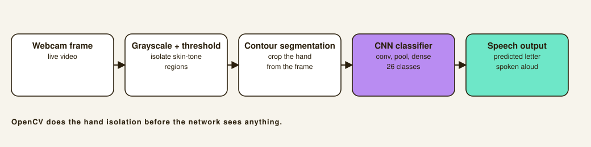

Sign Language to Speech: real-time ASL recognition with a CNN
A computer-vision pipeline that watches a webcam feed, isolates a signer's hand, classifies the ASL letter, and speaks it aloud, with no manual interpretation in the loop.
Overview
Most sign language tools stop at classifying a static photo of a hand shape. I wanted something closer to how signing actually happens, live, from a webcam, without a human in the loop translating. I led a team of three to build a system that detects a hand in real time, classifies which of the 26 ASL letters (A–Z) it's forming, and routes that prediction straight to speech output.

Model architecture
The classifier is a convolutional neural network built in TensorFlow and Keras, stacked convolutional, pooling, and dense layers trained to separate 26 visually similar hand shapes. Data augmentation and image normalization were key to generalizing past the lighting and hand-size variation you get from a live webcam instead of a curated dataset.
- CNN with convolutional, pooling, and dense layers, tuned for 26-class classification.
- Data augmentation (rotation, scale, lighting) to generalize beyond the training set.
- Image normalization applied consistently across training and live inference.
Real-time vision pipeline
Before any frame reaches the classifier, it passes through an OpenCV stage I built for real-time hand-region detection: grayscale conversion and thresholding to isolate skin-toned regions, followed by contour-based segmentation to crop just the hand out of a noisy webcam frame. That crop is what actually gets fed to the CNN.
Impact
- Full pipeline runs live off a webcam feed, no pre-recorded or manually cropped input required.
- 99.6% validation accuracy across all 26 ASL letters, robust to lighting/background noise via augmentation.
- Demonstrated an accessible, no-manual-interpretation path from gesture to spoken word.